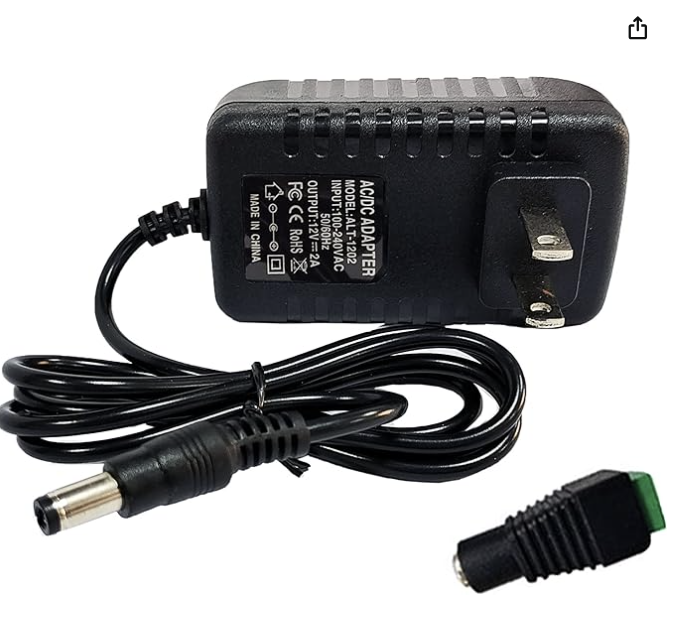

STM32-Based RGB Led Lamp
Introduction
Can a lamp be fashionable? An interior designer would say so. This lamp definitely isn't. The cool thing is that it CAN be. I'm going to be introducing what I consider a pretty neat product. Similar to my previous project, the LED Tow Hitch, this lamp takes advantage of magnets to allow a user to swap designs based on their personality, mood, season, etc. Even better, because this is a lamp meant to accessorize your desk or a shelf, we are able to integrate powerful RGB leds and a microcontroller, allowing for some pretty fun effects.
Project Overview
This Project Consists of 3 Main Components:
- LED PCB: We will need to create a compact board that can fit within the lamp housing
- Firmware We will need to create firmware that will run on the microcontroller for the LED effects
- 3D Printed, Modular, Enclosure: We will need a stylish enclosure that can protect the PCB and easily swap designs
Power
Before starting a design I like to imagine how I want the product to be powered. A battery? USB? In this lamp's case, I imagined myself wanting to plug it into an outlet near my desk. Or an outet below where I hung it up. With this in mind, I have had great experiences using AC/DC wall plugs. They are cheap, plentiful on Amazon, and they are sold in a wideeee variety of voltages and, more importantly, amp ratings. In addition to the how it will be powered, 'what' voltage it will be powered at is just as important. When first starting this project I envisioned myself taking the MCU/power electronics accross projects so I went with a 12V input that will allow me to power higher voltage components if needed and step-down anything else for the lower voltage electronics.
RGB LEDs
RGB LEDs are everywhere and very easy to find. However, I was looking at JLCPCB to do the assembly of this board for me. This, once again, meant I was a bit limited in the components I could pick. Even moreso for the LEDs because JLCPCB decided to designate many of these as 'Extended Parts' ($) AND as 'Standard' parts ($$$). To narrow down my choices, I knew I wanted an RGB LED with a built-in IC. This means I won't have to worry about managing current like I had to with the tow hitch cover. I also didn't need any high current LEDs as those tend to be more work, especially if they require a heat sink. This narrowed down my choices significantly and I settled on SK6812 series LED.
Microcontroller
For the microcontroller, I knew I was going to go with an MCU from ST's line-up. This is mainly because I am very familiar with their microcontroller and tools. Since the SK6812 LEDs require PWM it was clear I would, at a minimum, need the MCU to have some on-board timers. I settled on ST's STM32G0F6. This is considered ST's 'Budget Line'. The G0 has basic peripherals like I2C, SPI, UART, and a speedy enough 64Mhz clock. This was more than enough for my application and future applications. In hindsite, the F6 in particular (once taking into account an external clock, SWD Wire, Reset Wire, etc.) runs out of pins really quick. It makes a great application-specific MCU, but if you are looking for upgradability, I would get a higher pin package. Additionally, the low RAM and Flash size(32K/8K) will have you making sure every variable and line of code in your firmware needs to be there.
What Else?
Given these components we can map a high level overview of our system:
The Schematic
From this block diagram, we can extrapolate our system's design.
Some key points of the schematic:
- Following the LED's datasheet, each individual needs a decoupling capacitor. This requirement is iffy but caps are so cheap, it was not a difficult addition.
- We include the design for an external clock but it doesn't make the end design. The pads are nice to have if we need a more accurate oscillator in the future.
- Header pins are included for ST-Link (Firmware Flashing). So, we need to expose those pins for SWDIO, SWCLK, RESET, etc.
- We use a switching regulator and then an LDO. The switching regulator (Buck) is better for stepping down those larger voltage differences while dealing with larger currents (3A). Once converted to 5V a simple LDO can save us space, complexity, and COST. These are much cheaper than a buck and should be able to easily handle the current/power requirements of the STM32G0.
- Don't forget, we need the level shifter! The LED's minimum logic voltage is (0.7 * Vdd). This means the minimum is technically 3.5V. However, many reports onlinw of the sister product line of SK LEDs mention that some don't play nice with lower than 4V. So, we level shift our MCU's 3.3V to 5V so that we don't face any problems later on.
- We also leave exposed pads to have flexability with the button that will change LED effects.
The PCB
I want to clarify that although it isn't shown, you really should confirm that the pins of your microcontroller are compatable with the schematic you are creating. For example, the STM32G0 only allows SWDIO from Pin 18. Because this is a low pin package, some other peripherals ALSO happen to apply to Pin 18 (meaning its SWDIO or it is IIC, for example). It's important to actually check which peripherals you will need and find the pin you will be using accordingly, before connecting your pins on the schematic.
There is nothing inherently difficult about this design. I kept my decoupling caps close, spaced my LEDs as needed, gave wider traces to my power nets, and placed my switching regulator components as best as I could according to the recommendation of the manufacturer. This concludes our PCB design!
Pin Selection
The 3D printed design is very solid but there are a few improvements that can be made on the PCB side:
Pin Selection
The 3D printed design is very solid but there are a few improvements that can be made on the PCB side:
Conclusion
After all is said and done, we get a cool, robust, tow hook cover that lights up!
V3 Has Been Created!
Features:
- Lower current driving the LEDs
- Consolidated & larger (value, not package) resistors. Down from 24 resistors to 12.
- Wider traces! Better utilization and heat distribution through out the board.